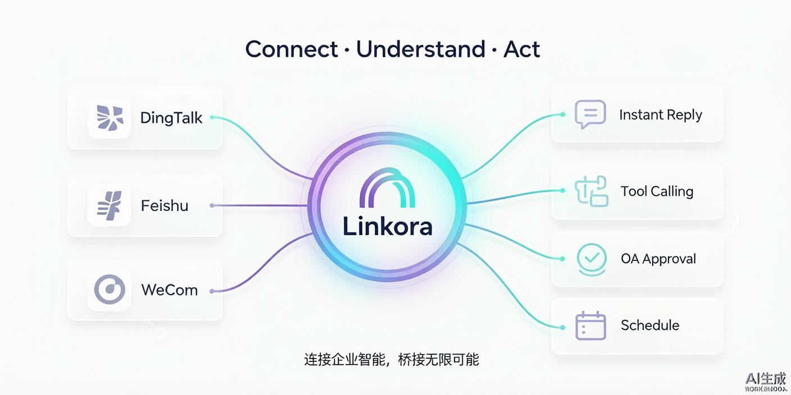
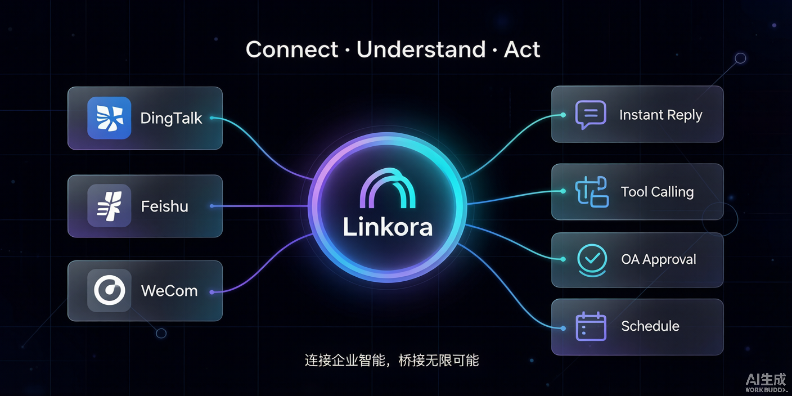

企业知识 RAG
读得懂公司的文档和历史聊天记录。需要的时候把相关资料调出来放进对话，给出的回答都有出处、能溯源。
完整能力
首页只放了最常被问到的六项。这里是灵桥目前的完整能力清单，每一项都可以点进文档看细节。
读得懂公司的文档和历史聊天记录。需要的时候把相关资料调出来放进对话，给出的回答都有出处、能溯源。
一键开启「只依据知识库作答」：回答 100% 来自检索内容、零编造，知识库没收录就直说。制度问答、产品资料这类对出处要求高的场景，用它最稳。
一张统一的能力清单，目前内置 49 个：查考勤、建待办、发通知、搜消息、读日报周报、查别人转发的审批流程……它是真去办事，不是只动嘴给建议。
先把消息分个类，41 种意图里能套规则的就走固定流程，只有拿不准的才交给大模型。
要改数据先确认，敏感操作可审批。双重把关，保证同事在说话时 AI 绝不插嘴。
19 个页面、一百八十多个接口。会话、知识库、工具、审批、实时摘要、安全防护，全在浏览器里看得清、调得了。
钉钉、飞书、企微各用各的数据库和轮询，数据互不串门，哪个平台想停都能单独停。
每天定时把近期的对话摘要推给你（钉钉私聊），后台也能随时看同一份汇总。默认关着，想用再开。
摘要页用一张张卡片把每段对话摆出来：头像、来自哪个平台、几条消息、自动归纳的关键词和待办，一眼看完。今天、昨天、近七天，随时切换。
别人从钉钉、飞书、企微发来的消息，先查伪造的对话模板标记与边界逃逸，再清洗、隔离后交给模型；正常业务话术一字不改。管理台「安全防护」页能看风险趋势、事件明细，还能现场试检测、调策略。


完整文档索引
架构、设计、工具、接口、知识库、意图、部署和开发——做二次开发要查的，这里都有。